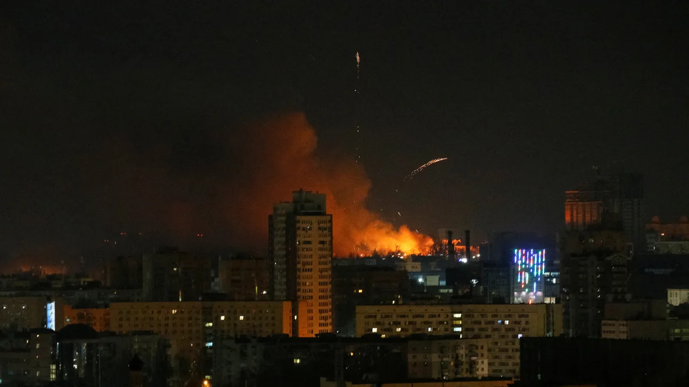

Timeline
-
February 24, 2022, 4AM ESTPutin Announces "Special Military Operation"
Russian forces had been building up on the Ukraine-Russia border for months at the end of 2021, and tensions were already high. On February 24, 2022, Russian President Putin ordered his troops to enter Ukraine as part of what he called a "special military operation."
In a speech he gave on the same day, he stated that the goal of the operation was to protect the people of the Donbas region and to "demilitarize" and "denazify" Ukraine. He also warned that any "threat" to Russia will be met with an immediate response and face major consequences.
You can watch his speech below.
Soon after Putin's speech, explosions were heard across Ukraine, signifying the beginning of the war.
-
February 24, 2022, 10AM ESTUkraine Responds to Invasion
In response to the invasion, Ukranian President Zelenskyy declared martial law in Ukraine and officially broke diplomatic ties with Russia. He informed the Ukranian public of defense measures being taken and cautioned people to remain at home to stay safe.
You can watch his address below.
-
February 25, 2022, 12PM ESTWorld Responds to Invasion
Around the world, countries began condemning Putin's invasion of Ukraine.
The European Union (EU) and United Kingdom (UK), in particular, froze President Putin and Russian Foreign Minister Sergey Lavrov's assets, prohibiting EU- and UK-based banks from making funds available to them. According to the EU's foreign policy chief, Joseph Borell, the goal was to "[isolate] [Russia] from the interational community."
 Putin (left) and Lavrov (right)
Putin (left) and Lavrov (right)
-
February 25, 2022, 1PM ESTZelenskyy Posts "We're Here" Video
As the war was beginning, rumors had been going around that Ukranian leaders were fleeing the country. To calm the rumors and reassure Ukranian citizens, President Zelenskyy and his team filmed a video of themselves in Kyiv saying that they were there to defend their independence.
You can watch the video below.
Zelenskyy also reportedly refused US's offer to help him evacuate, saying "I need ammunition, not a ride."
-
February 25-27, 2022Battles of Kyiv and Kharkiv Begins
After the initial explosions in Ukraine's capital, Kyiv, on February 24, Russian troops entered and began trying to take control of Kyiv on February 25. Active fighting started to take place between Ukranian and Russian forces.
Ukranian citizens were urged to take shelter in bomb shelters, subway stations, parking garages, and so on. Many tried to evacuate the city.
A residential building was hit, and more explosions were heard around Vasylkiv, which is around 30 km south of Kyiv and includes a military airfield and multiple fuel tanks.
 Explosions seen above Kyiv's skylineRussian forces also attacked the city of Kharkiv around this time. You can learn more about the Battle of Kyiv here and more about the Battle of Kharkiv here.
-
Late February - Early March 2022Refugees Begin to Flee Ukraine
As fighting began and escalated, hundreds of thousands of Ukranian civilians started attempting to leave the country. According to the United Nation's refugee agency, at least 100,000 people had left their homes in the first 24 hours of the war.
The majority attempted to flee to Poland, but some also tried to flee to other neighboring countries, including Slovakia, Hungary, Romania, and even Russia. You can learn more about attempts to flee here.
Queues at the borders were several days long, with people travelling by car, on foot, by train, and so on. Under martial law, men ages 18-60 were prohibited from leaving the country, so the majority of people fleeing were women and children.
Number of refugees to various countries between February 24 and March 4 -
March 2, 2022Kherson Falls
Russian forces seized the region of Kherson, including the regional capital, making it the first major Ukranian city they took, after days of fighting that had as many as 300 Ukranian civilian and fighter casualties.
It is likely that Russia was attempting to form a "land bridge" from Crimea to the Donbas region, which would allow for much easier travel between the regions.
Map of regions taken by Russia -
March 9-16, 2022Mariupol Attacks
Also along the "land bridge" that Russia may be attempting to create, Mariupol saw several attacks by Russia forces in March. 9th Mariupol Maternity Hospital Attack 16th Mariupol Theater Bombing
Despite Russia agreeing to a 12-hour pause in action to allow refugees to evacuate, on May 9th, a maternity hospital in Mariupol was hit by a Russian missile.
On March 16, Russia also bombed Mariupol's Drama Theater, in which an estimated 1,300 civilians were sheltering. Around 300 people were killed, but Russia has denied that its forces were responsible despite attacking the city for weeks. On the ground outside the building, the world "CHILDREN" was painted. The aerial footage below shows the destruction resulting from the bombing.
-
March 31-April 1, 2022Russia Withdraws From Bucha
About 70% of Russian forces withdrew from Bucha, a city near Kyiv, after weeks of fighting.
Information about and photos of atrocities committed by Russian troops also surfaced. Hundreds of Ukranians died, and many were clearly executed by the Russians. Images of the casualties resulted in calls for Russia to be investigated for war crimes.
Russia claimed the images were fake in response, prosecuting Russian journalists who spoke about the killings for "spreading misinformation." You can see Russians' responses below.
-
April 14, 2022Moskva Sinks
Moskva, the flagship of Russia's Black Sea fleet, sank, although the cause remains disputed.
Ukraine claims that it hit the Moskva with anti-ship cruise missiles, resulting in a fire that detonated stored ammunition, but Russia maintains that the fire's origin and reason was unknown.
The destruction of this ship was a major embarassment for Russia and marked the nation's biggest wartime loss of a naval ship in four decades.
Moskva sinking -
May 17, 2022Mariupol Surrenders
Over 250 Ukrainian fighters surrendered to Russian forces at the Azovstal steelworks in Mariupol after weeks of bombardment that killed thousands of civilians. The steel plant had previously become a symbol of Ukranian resistance.
Ukranian fighters surrenderYou can learn about the damage done to the steel plant here .
Despite the surrender, Ukrainian officials praised the fighters, saying their defense of the plant stalled Russian forces and prevented the capture of the city of Zaporizhzhia.
-
June 1, 2022US Military Aid
The Biden administration announced it would send $700 million in new military aid to Ukraine, including M142 High Mobility Artillery Rocket System (HIMARS) precision rockets, which are high-tech, medium-range rocket systems. Ukraine had been asking for HIMARS rockets to help them fight back against Russians in the Donbas region.
 HIMARS rockets
HIMARS rockets
-
July 3, 2022Lysychansk Falls
Lysychansk, a city in the Luhansk region, fell to Russian forces after weeks of fighting, and Ukranian troops withdrew from the city.
Capturing this city marks a key victory for Russia, allowing them to more easily seize the entire Donbas region, which includes Luhansk.
Russian-backed separatists holds Soviet-era flag above the city name of "Lysychansk" -
August-September 2022Ukraine Launches Counteroffensives
Ukraine launched a counteroffensive in the Kherson region, using foreign weapons like HIMARS to target Russia's militar infrastructure.
Ukranian forces also attacked a Russian air based in Crimea, and, in September, they were able to retake much of the Kharkiv region, marking a shift in the war, with Ukraine taking more of the initiative.
Ukranian soldier places Ukranian flag atop destroyed Russian tank in Kharkiv -
September 21, 2022Russia Begins Draft
After losing some ground in Ukraine, Putin announced Russia's first major mobilization since World War II.
The draft sparked protests, and many men of drafting age (18 to 27) began trying to leave the country to prevent being drafted.
Although the mobilization increased the number of troops Russia had, it also produced fighters that were poorly equipped and largely untrained, resulting in more casualties in the coming months.
Newly drafted Russian soldiers -
September 30, 2022Russia Annexes Four Regions of Ukraine
President Putin officially signed "accession treaties," which formalized Russia's illegal annexation of four occupied regions in Ukraine: Donetsk, Luhansk, Zaporizhzhia, and Kherson. This was the largest takeover of territory in Europe since World War II.
Putin and the Kremlin claimed that the decision to annex these regions was made based on "referendums" were conducted in the regions, which supposedly showed that the regions want to be a part of Russia.
You can watch Putin's speech after signing the treaties below.
-
October 8, 2022Crimea Bridge Attack
A huge explosion severely damaged the Crimean Bridge that Russia had opened in 2018 as a point of connection between the Crimean Peninsula and the Russian mainland.
President Zelenskyy said the Ukranian government "did not order" the explosion, and officials said the explosion was from a bomb loaded onto a truck. Still, the explosion both marked a symbolic loss for Russia and effectively cut off transit across the bridge, blocking a key supply route for Russia's forces and resources in the war.
Smoke seen coming from Crimean bridge -
November 12, 2022Russia Surrenders Kherson
After fighting the counteroffensive launched by Ukraine, Russian troops withdrew from the city of Khreson, marking a major loss for the invading nation since the city was the only Ukranian regional capital they had successfully captured.
Kherson residents celebrated the news in the streets, and you can watch their reactions below.
-
December 21, 2022Zelenskyy Meets with Biden
President Zelenskyy travelled to Washington, DC, to meet with US President Biden at the White House and to address Congress. This was the first foreign trip Zelenskyy made since Russia invaded Ukraine.
Just before the visit, Biden announced the US would be sending nearly $2 billion in additional security assistance to Ukraine, including a new Patriot air defense system.
In his address, Zelenskyy discussed the war and notably thanked America for their support. You can watch the entire address below.
-
January 25, 2023German and US Aid
Germany officially agreed to provide Leopard 2 tanks to Ukraine and allowed other European countries to export the German-made tank, and US President Biden announced that the US would send 31 M1 Abrams tanks to Ukraine.
The move was long-awaited and signified both countries' support for Ukraine.
Leopard 2 tank -
February 20, 2023Biden Visits Kyiv
US President Biden visited Kyiv for the first time since Russia's invasion began. The visit was highly symbolic, showcasing America's support for President Zelenskyy and Ukraine, and, during it, Biden recalled how he and Zelenskyy spoke on the pone as Russian forces entered.
Biden also announced $500 million in new assistance, including more military equipment, and said new sanctions would be imposed against Russia.
After the visit, he tweeted out the following:
One year later, Kyiv stands. Ukraine stands. Democracy stands. America — and the world — stands with Ukraine.
— President Biden (@POTUS) February 20, 2023
Рік потому Київ стоїть. Україна стоїть. Демократія стоїть. Америка – і світ – стоїть з Україною. pic.twitter.com/6i02u3aFgd